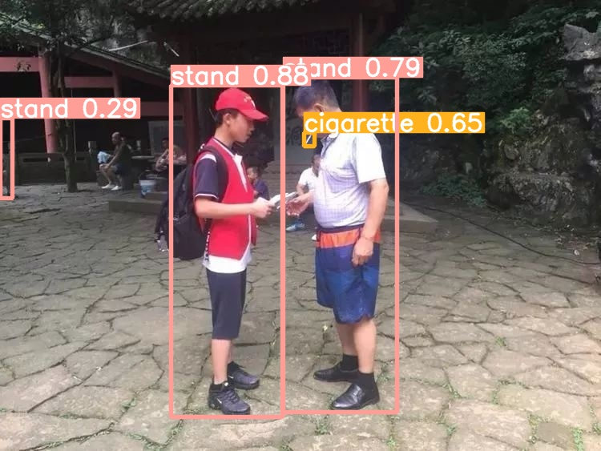
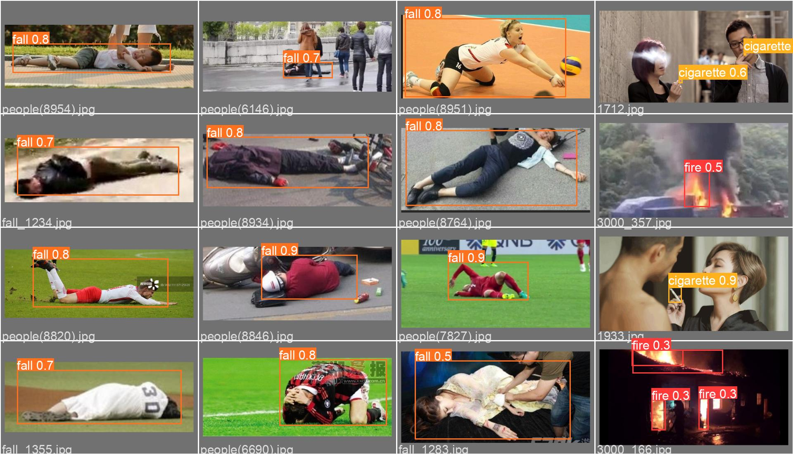
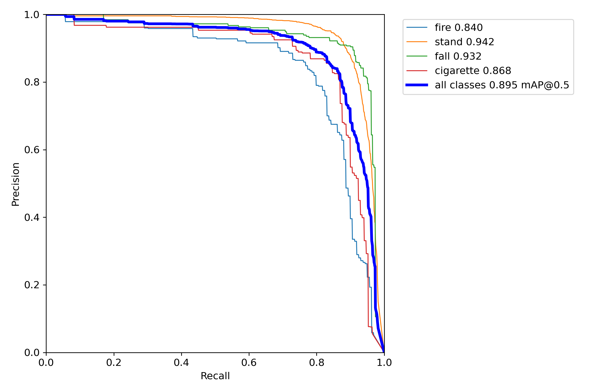
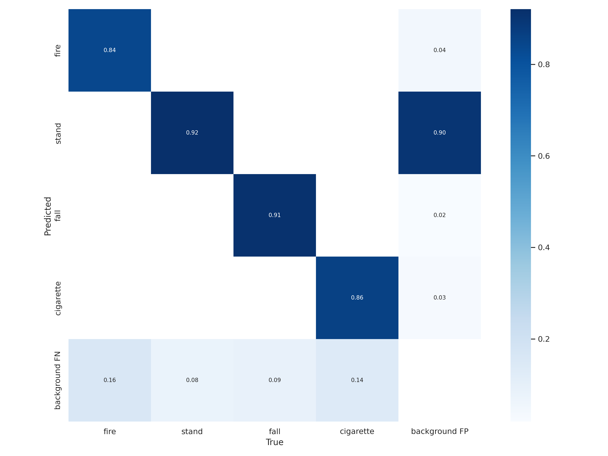
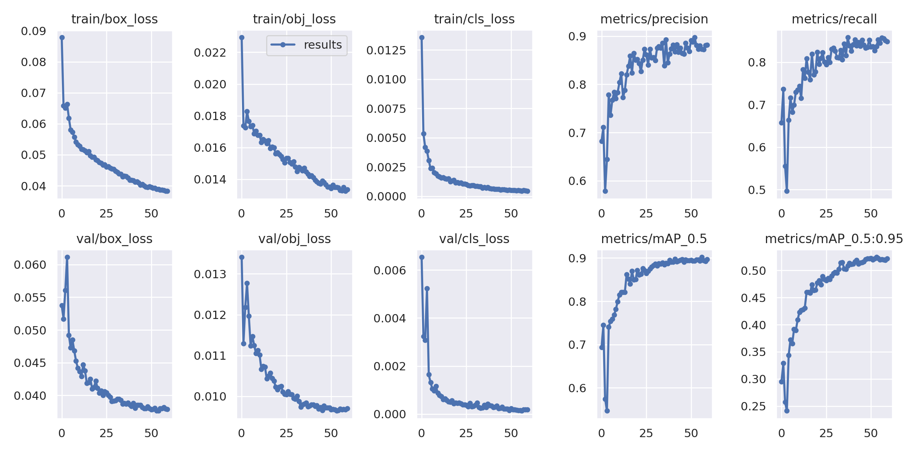

YOLOv5 / EIoU / Video detection
景区危险目标与行为检测
基于 YOLOv5 v6.0 改造四类目标检测，在景区视频中定位明火、站立行人、跌倒与吸烟目标。
- 研究问题
- 怎样从景区监控画面中定位危险行为与安全隐患？
- 我的做法
- 调整边框回归损失，比较注意力和特征融合配置，并整理视频推理流程。
- 实验观察
- 22 组归档实验中，最高 mAP@0.5 为 0.896。
视频中的检测效果
观察目标框、类别和置信度随画面更新。青色 Region 框用于辅助展示危险区域。


实现与改进
- 四类输出。 fire、stand、fall、cigarette，定位目标框并输出类别与置信度。
- 边框回归。 当前损失实现启用 EIoU，实验归档覆盖不同回归损失配置。
- 特征表达。 实现 SE、ECA、CA、CBAM、SimAM 与 BiFPN 配置，分别开展实验比较。
- 推理后处理。 对相交的 cigarette 与 stand 检测框做关联与合并，支持图像、视频和摄像头输入。

实验结果
各组取 fitness 最高的一轮作为代表，fitness = 0.1 × mAP@0.5 + 0.9 × mAP@0.5:0.95。
| 配置 | 训练轮数 | mAP@0.5 | mAP@0.5:0.95 |
|---|---|---|---|
| YOLOv5s 基线 | 100 | 0.8648 | 0.4721 |
| YOLOv5l 基线 | 100 | 0.8811 | 0.4973 |
| YOLOv5l + EIoU · scratchhigh | 60 | 0.8960 | 0.5246 |
| YOLOv5l + EIoU + BiFPN · scratchhigh | 60 | 0.8932 | 0.5226 |
- 最优归档组合相对 YOLOv5l 基线，mAP@0.5 高约 1.5 个百分点。
- 实验训练轮数和配置存在差异，性能变化需结合各组条件理解。





演示片段来自项目归档推理输出，具体视频使用的权重与上表实验尚缺少完整的一一对应记录。